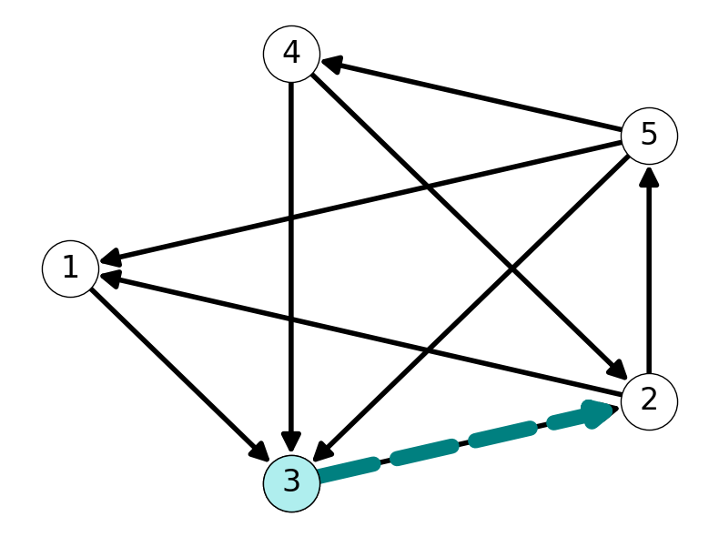
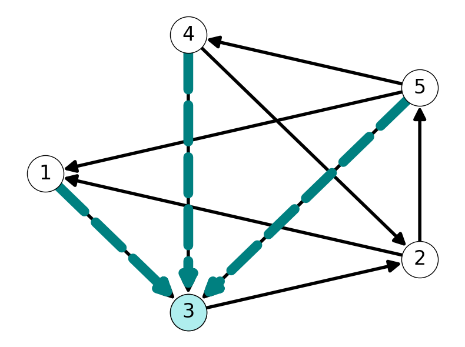

2 Introduction to Graphs
2.1 Directed Graphs
2.1.1 Introduction
Definition 2.1 (Directed Graphs) A directed graph is an ordered pair \(G := (V, A)\) composed of:
a set \(V\) of vertices or nodes of size/cardinality \(n:=|V|\);
a set \(A\) of ordered pairs called arcs of cardinality \(m:= |A|\).
For an arc \((i,j) \in A\), we call \(i\) the tail and \(j\) the head.
We will focus on graphs without self-loops: \((i,i)\) is not an arc!
Example 2.1 Consider \(G = (V, A)\) with \[\begin{aligned} V &= \{1,2,3,4,5\}, \\ \\ A &= \{(1,2), (1,3), (1,5), (2,4), (3,2), (4,1), (5,1), (5,3)\}. \end{aligned} \]
We can represent or visualize \(G\) as nodes \(V\) joined by lines/arrows corresponding to arcs \(A\). Figure 2.1 gives several different representations of this graph.
2.1.2 Adjacency
Arcs in a graph define pairwise relationships between nodes.
Definition 2.2 (Adjacent nodes) Node \(i \in V\) is adjacent to node \(j \in V\) if arc \((i,j)\) belongs to \(A\).
In this case, the arc \((i,j) \in A\) is incident to node \(j\).
Example 2.2 Consider the graph \(G=(V,A)\) given in Example 2.1. Node \(1\) is adjacent to \(3\) because the arc \((1,3) \in A\) is included in the graph. However, Node \(3\) is adjacent to \(1\) since \((3,1) \notin A\). See Figure 2.2 for illustrations of these relationships.
2.1.3 Complete Graphs
Definition 2.3 (Complete Graphs) A directed graph \(G = (V, A)\) is complete if:
\(A\) contains an arc for each pair of nodes in \(V\);
Equivalently, every node in \(V\) is adjacent to every other node.
Example 2.3 The graph given in Example 2.1 is not complete or incomplete. Indeed, there are several potential arcs, e.g., \((4,5)\), which are not present in this graph.
However, Figure 2.3 (a) provides a visualization of the complete graph on \(4\) nodes. Each of the possible arcs between pairs of nodes is present.
2.2 Number of Arcs in a Complete Graph
Theorem 2.1 For any directed graph \(G\), we have \(m \le n(n-1)\). If \(G\) is complete then \(m = n(n-1)\).
Proof. Each of the \(n\) nodes could be adjacent to each of the other \(n-1\) nodes. Therefore the number of edges is bounded above by \[ m \le n(n-1). \] When the graph is complete, every possible edge is present, i.e., every node is adjacent to every other node. Therefore, \[ m = n(n-1) \] if \(G\) is complete. On the other hand, \(m < n(n-1)\) if \(G\) is not complete.
2.3 Dense and Sparse Graphs
Definition 2.4 (Dense/Sparse Graphs) A directed graph \(G\) is sparse if \(m << n(n-1)\). Otherwise \(G\) is dense.
Example 2.4 Figure 2.4 provides visualisations of three graphs with increasing density.
A sparse graph with \(5\%\) of possible edges present (Figure 2.4 (a)).
A dense graph with \(50\%\) of possible edges present (Figure 2.4 (b)).
A very dense graph with \(95\%\) of possible edges present (Figure 2.4 (c)).
2.4 Paths and Connectivity
We can extend our definition of adjacency to describe pairwise relationships of nodes via sequences of arcs.
Definition 2.5 (Path) A path is a sequence of arcs \[(i_1, i_2), (i_2, i_3), \dots, (i_k, i_{k + 1})\] with \(k+1 \ge 2\) nodes with distinct origin \(i_1\) and destination \(i_{k+1}\).
We can also use the notation \[ (i_1, i_2, \dots, i_k, i_{k+1}) \] to denote a \((i_1, i_{k+1})\)-path.
Example 2.5 The graph visualised in Figure 2.5 contains several paths from \(2\) to \(3\). For example, both \(P_1 = ((2,4), (4,1), (1,3))\) and \(P_2 = ((2,4), (4,1), (1,5), (5,3))\) are \(23\)-paths.
Definition 2.6 (Connectivity) Node \(v\) is connected to node \(w\) if there is path in \(G\) with origin \(i_1 = v\) and destination \(i_{k+1} = w\).
Definition 2.7 A graph is connected if every pair of nodes is connected.
Example 2.6 Node \(2\) is connected to Node \(3\) in the graph given in Example 2.5. Indeed, we saw that there are at least two \(23\)-paths in Example 2.5.
Moreover, the graph \(G\) is connected because we every pair of nodes is connected via an arc. Indeed, we can use the subpaths of the paths \(P_1\), \(P_2\) and the \(34\)-path \[ P_3 = ((3,2), (2,4)) \]
to reach every node from every other node. For example, we can use parts of \(P_2\) and \(P_3\) to find the \(14\)-path \[ P_{14} = ((1,5), (5,3), (3,2), (3,4)). \]
2.4.1 Cycles
If a path begins and ends at the same node, then we call it a cycle.
Definition 2.8 (Cycles) A cycle is a sequence \[(i_1, i_2), (i_2, i_3), \dots, (i_k, i_{k + 1})\] of \(k \ge 2\) consecutive and distinct arcs with \(i_{k+1} = i_1\) (i.e., the origin and destination coincide).
Note that a cycle may visit some nodes more than once (other than the origin/destination).
Example 2.7 The graph \(G\) given in Figure 2.7 contains the cycles \(C_1 = (2,5,4,3,2)\) and \(C_2 = (1,3,5,4,2,1)\). Note that \(C_2\) visits node \(2\) twice. This implies that we also have cycles \(C_3 = (1,3,2,1)\) and \(C_4 = (2,5,4,2)\).

2.5 Directed Cuts
Having introduced notions of connectivity, we now define sets of arcs whose removal disconnect the graph.
Definition 2.9 (Forward Cut) Let \(S \subseteq V\), that is, \(S\) is a subset of the node set \(V\).
The set of arcs with tail in \(S\) and head in \(V\setminus S\) is the forward directed cut induced by \(S\): \[\delta^+(S) := \{(i,j) \in A: i \in S \text{ and } j \in V\setminus S\}.\]
Informally, the forward directed cut is the set of arcs that leave \(S\).
Definition 2.10 (Backward Cut) The backward directed cut induced by \(S\) is the set of arcs with tail in \(V\setminus S\) and head in \(S\):
\[\delta^-(S) := \delta^+(V\setminus S) = \{(i,j) \in A: i \in V\setminus S \text{ and } j \in S \}.\]
The backward directed cut is the set of arcs entering \(S\).
Example 2.8 Consider \(S = \{4, 5\}\) for the graph given in Figure 2.8 (a). This graph and set of nodes has forward and backward cuts \[ \delta^+(\{4,5\}) = \{(4,2), (4,3), (5,1)\} \]

2.5.1 Stars and Degrees
Definition 2.11 (Stars) Let \(i \in V\). The forward and backward stars of \(i\) are the cuts \[\delta^+(\{i\}) \text{ and } \delta^-(\{i\})\] respectively.
Definition 2.12 (Degree) The out-degree and in-degree of \(i\) are the number of edges with \(i\) as tail and head, respectively: \[|\delta^+(\{i\})| \text{ and } |\delta^-(\{i\})|.\]
Example 2.9 Consider \(v = 3\), i.e., \(S = \{v\} = \{3\}\), in the graph \(G\) considered in Example 2.8:
- The forward star is \(\delta^+(\{3\}) = \{(3,2)\}\).


2.6 Undirected Graphs
Definition 2.13 (Undirected Graphs) An undirected graph is an ordered pair \(G := (V, E)\) composed of
a set of vertices \(V\) \((n = |V|)\)
a set \(E \in V \times V\) of unordered pairs called edges \((m = |E|)\).
For an edge \(\{i,j\}\), we call \(i\) and \(j\) its endpoints.
Example 2.10 Consider \(G=(V,E)\) with \[ \begin{aligned} V &= \{1,2,3,4,5\} \\ E &= \{12, 13, 15, 23, 24, 25, 34, 35,45\}. \end{aligned} \] Figure 2.10 gives a visualisation of this graph.
2.7 Properties of Undirected Graphs
2.7.1 Adjacency
Properties ofdirected graphs generalize to undirected graphs with minor differences:
\(ij \in E\) is incident to both \(i\) and \(j\).
If \(ij \in E\) then \(i\) and \(j\) are (mutually) adjacent.
If there is a path from \(i\) to \(j\) then \(i\) and \(j\) are (mutually) connected.
\(G = (V,E)\) is complete if each pair of vertices in \(V\) is adjacent: \[E = \{\{i,j\}: i, j \in V,~i\neq j\}.\]
Theorem 2.2 Every undirected graph \(G\) has \(|E| \le n(n-1)/2\) edges.
Example 2.11 Consider the undirected graph \(G\) given in Figure 2.11:
\(0\) and \(3\) are adjacent because \(\{0,3\} \in E\).
\(0\) and \(2\) are not adjacent because \(\{0,2\} \notin E\).
\(1\) and \(2\) are connected. Indeed, \(G\) contains \(12\)-paths \((1,4,3,2)\) and \((1,0,3,2)\).
2.7.2 Cuts, Stars, and Degree in Undirected Graphs
Definition 2.14 (Undirected Cuts) The undirected cut induced by \(S \subseteq V\) is the set of edges with one end point in \(S\) and one in \(V\setminus S\): \[\delta(S) := \{ ij \in E: i \in S,~j\notin S\}.\]
Definition 2.15 (Stars) The star of node \(i \in V\) is the set \(\delta(\{i\})\).
Definition 2.16 (Degree) The degree of \(i \in V\) is the cardinality of its star: \(|\delta(\{i\})|\).
Example 2.12 Consider the graph given in Figure 2.12:
- The cut for \(S = \{1,2,5\}\) is \[ \delta(S) = \{01, 16, 02, 23, 24, 53, 54, 56\} \]
- The star for node \(3\) is \[ \delta(\{3\}) = \{23, 53, 63\}. \]
- Node \(3\) has degree \(3\).
2.8 Adjacency Lists and Matrices
Definition 2.17 (Adjacency Lists) An adjacency list \(L\) is a list of size \(n\) where each component \(L(i)\) is a list of nodes adjacent to \(i\):
\(L(i) = \{j: (i,j) \in \delta^+(\{i\})\}\) for directed graphs;
\(L(i) = \{j: \{i,j\} \in \delta(\{i\})\}\) for undirected graphs.
Definition 2.18 (Adjacency Matrices) The adjacency matrix \(A = A(G)\) of \(G = (V, E)\) is a binary matrix \(A \in \{0,1\}^{n\times n}\) such that \[ a_{ij} = \begin{cases} 1, & \text{if } (i,j) \in E, \\ \\ 0, & (i,j) \notin E. \end{cases} \]
Example 2.13 Consider the directed graph given in Figure 2.13 (a).
This graph has the adjacency lists \[ \begin{aligned} L(0) &= \{1,3\}, &&& L(1) &= \{3\}, \\ L(2) &= \{0,1\}, &&& L(3) &= \{0\}. \end{aligned} \] Moreover, the adjacency matrix of this graph is \[ A = \begin{pmatrix} 0 & 1 & 0 & 1 \\ 0 & 0 & 0 & 1 \\ 1 & 1 & 0 & 0 \\ 1 & 0 & 0 & 0 \end{pmatrix}. \]
Example 2.14 Consider the directed graph given in Figure 2.13 (b).
This graph has adjacency lists \[ \begin{aligned} L(0) &= \{1\}, &&& L(1) &= \{0,3\}, &&& L(2) &= \{4\}\\ L(3) &= \{1\}, &&& L(4) &= \{2\}. \end{aligned} \] The adjacency matrix is \[ A = \begin{pmatrix} 0 & 1 & 0 & 0 & 0 \\ 1 & 0 & 0 & 1 & 0 \\ 0 & 0 & 0 & 0 & 1 \\ 0 & 1 & 0 & 0 & 0 \\ 0 & 0 & 1 & 0 & 0 \end{pmatrix}. \]